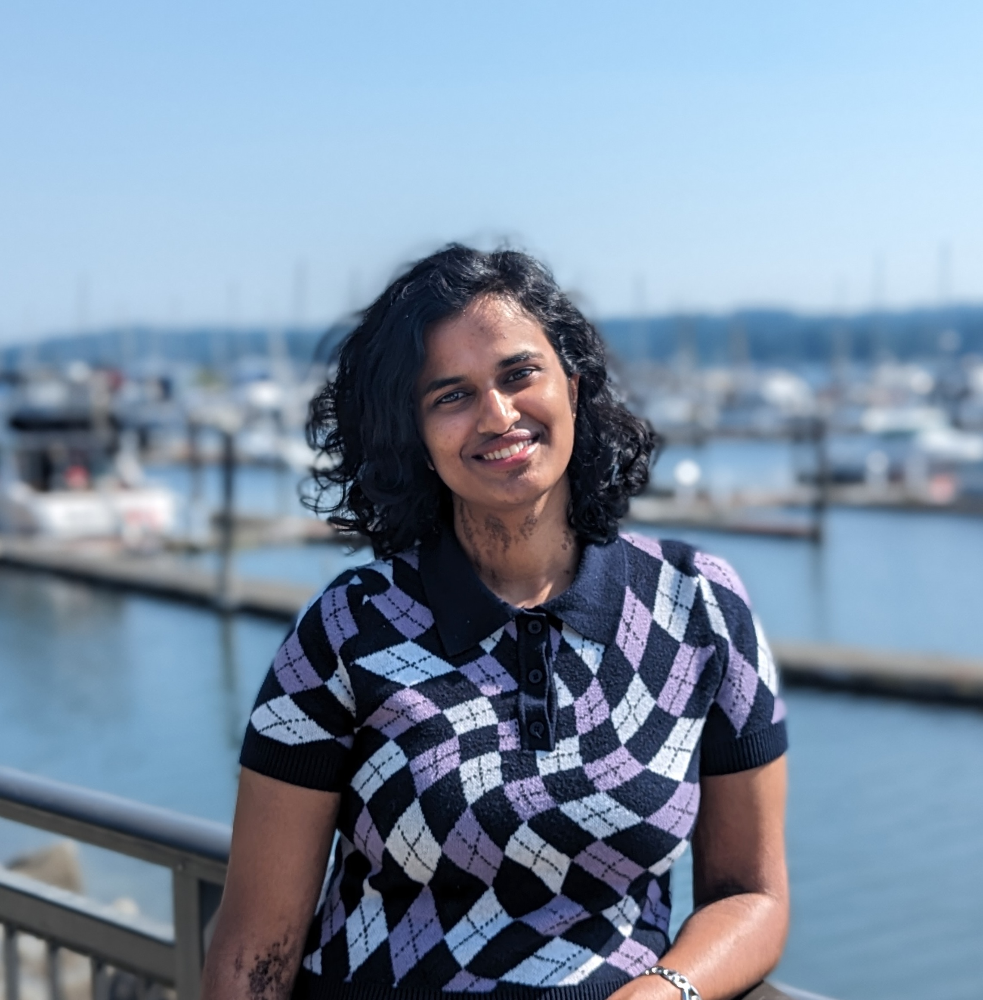
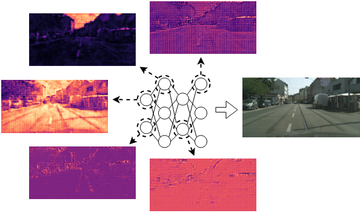
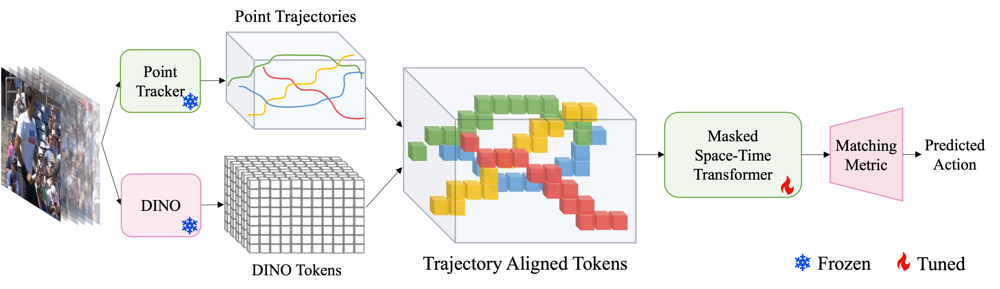
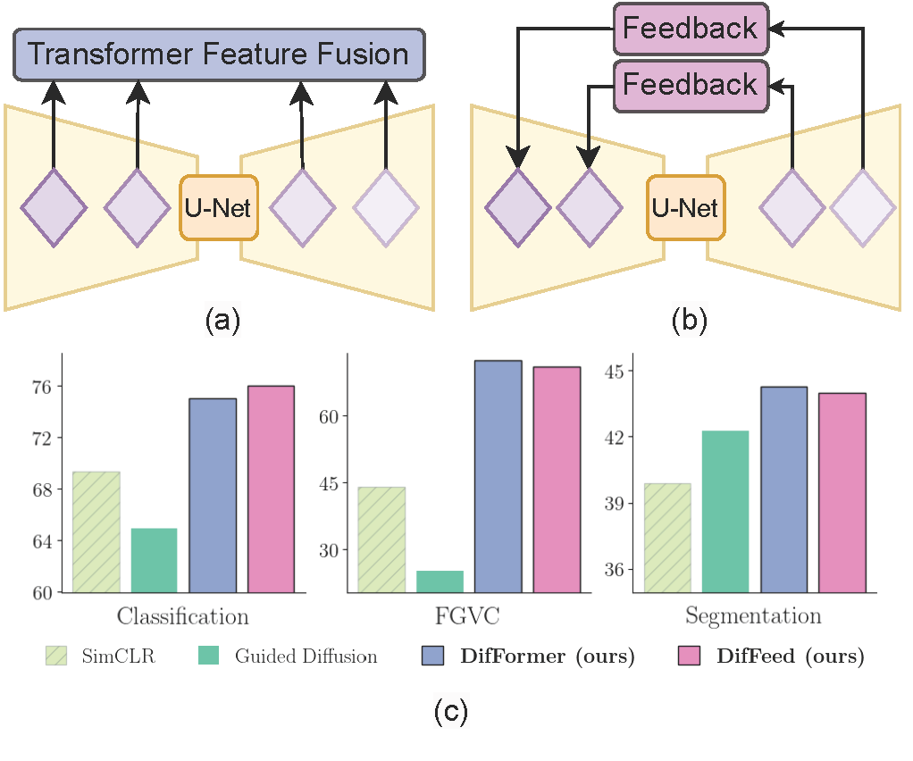
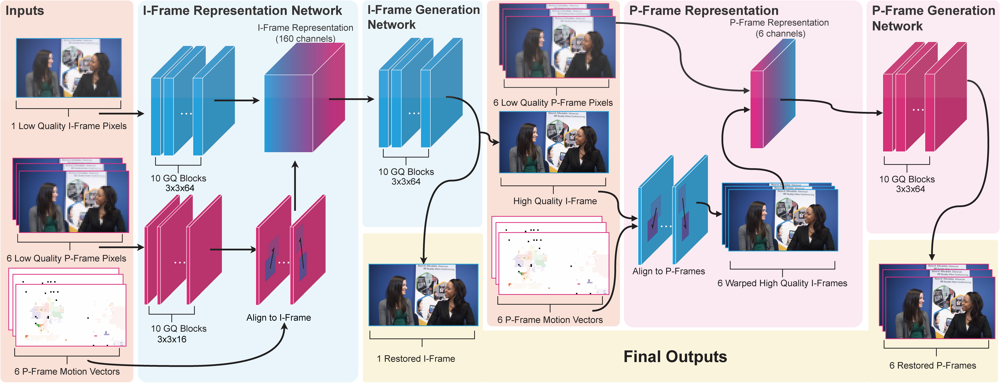
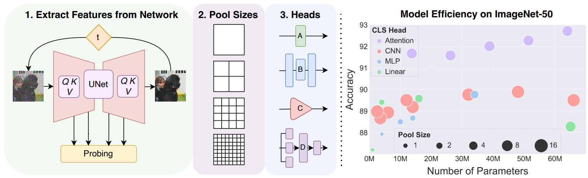

|
I am a second year PhD student in the Department of Computer Science at the University of Maryland (UMD), advised by Prof Abhinav Shrivastava, where I study computer vision. Prior to this, I completed my master's in Computer Science from UMD. I received my bachelor's degree in Computer Science from RVCE Bangalore. During my junior and senior years, I had the privilege of working at IISc, with Prof Y Narahari on multi-armed bandits and Prof K V S Hari. Before pursuing my master's at UMD, I worked at Cisco for 2 years, on web microservices. My current research interests lie in understanding implicit neural representations and exploring their utility in computer vision tasks. |
 |
{kind=link}

|
Namitha Padmanabhan, Matthew Gwilliam, Abhinav Shrivastava Preprint. Under review. Project Page |Paper |Code TeCoNeRV is the first hypernetwork-based implicit video compression method that scales to 720p and 1080p, while maintaining fast encoding speeds. |
|  |
Namitha Padmanabhan*, Matthew Gwilliam*, Pulkit Kumar, Shishira R Maiya, Max Ehrlich, Abhinav Shrivastava IEEE/CVF Conference on Computer Vision and Pattern Recognition (CVPR), 2024 Project Page |Paper |Code XINC dissects Implicit Neural Representation (INR) models to understand how neurons represent images and videos and to reveal the inner workings of INRs. |
|  |
Pulkit Kumar, Namitha Padmanabhan, Luke Luo, Saketh Rambhatla, Abhinav Shrivastava Proceedings of the European Conference on Computer Vision (ECCV), 2024 Project Page |Paper Few-shot action recognition with disentanglement of motion and appearance representations by harnessing point trackers and self-supervised representations. |
|  |
Matthew Gwilliam*, Soumik Mukhopadhyay*, Yosuke Yamaguchi✝, Vatsal Agarwal✝, Namitha Padmanabhan, Archana Swaminathan, Tianyi Zhou, Abhinav Shrivastava Proceedings of the European Conference on Computer Vision (ECCV), 2024 Project Page |Paper Exploring diffusion models as unified unsupervised image representation learning models for many recognition tasks. Proposed DifFormer and DifFeed, novel mechanisms for fusing diffusion features for image classification. |
|  |
Max Ehrlich, Jon Barker, Namitha Padmanabhan, Larry S Davis, Andrew Tao, Bryan Catanzaro, Abhinav Shrivastava IEEE/CVF Winter Conference on Applications of Computer Vision (WACV), 2024 Paper Restore detail in compressed videos by leveraging structure and motion information from the video bitstream, handling various compression quality settings. |
|  |
Matthew Gwilliam*, Soumik Mukhopadhyay*, Vatsal Agarwal, Namitha Padmanabhan, Archana Swaminathan, Tianyi Zhou, Abhinav Shrivastava preprint only Project Page |Paper Show the potential of diffusion models as unified unsupervised image representation learners. |
|
|